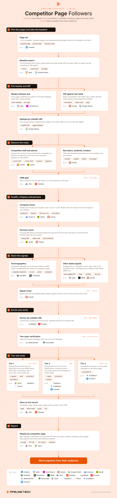

Competitor Page Followers
Install the Pipeline.tech "Competitor Page Followers" outbound play. Fetch https://raw.githubusercontent.com/pipeline-tech/plays/main/core/SKILL.md and https://raw.githubusercontent.com/pipeline-tech/plays/main/plays/competitor-page-followers/SKILL.md, save them as ~/.claude/skills/pipeline-outbound-core/SKILL.md and ~/.claude/skills/pipeline-competitor-page-followers/SKILL.md, then run /pipeline-competitor-page-followers.

A new follow on a competitor's company page is a quiet hand-raise: the person wants to hear more from a vendor in your category and has not decided from whom. A weekly diff of the follower list catches them while they are still forming an opinion. On its own the follow is a weak signal, so this play stacks it with harder evidence before anyone picks up the phone.
Load pipeline-outbound-core first. Where a step says "apply core", follow that section of the core skill.
Inputs
Ask for these before step 1, and save them to ./pipeline-plays.config.json:
- The ICP in one paragraph: industries, headcount band, geography, the problem you solve.
- The 3 to 6 competitors buyers name on sales calls, with company page URLs and any separate product page URLs.
- The seat that buys: exact titles and functions, with the seniority floor.
- Stack answers from core section 1, the real LinkedIn profile connection requests go out from, and whether RB2B runs on the website.
- Two offers in one sentence each: the evaluation offer for accounts with no tool detected, the switch offer with one proof point for accounts on the competitor.
Steps
1Pick the pages and take the baseline
- Pick the 3 to 6 competitors buyers name on sales calls. Where a competitor runs a separate page per product, add it; product page followers are closer to a decision.
- Export the full follower list of every page once and store it with the page URL and the export date. Nothing in the baseline is contacted; it only gives next week's pull something to diff against. The LinkedIn URL is the row key from here on.
2Pull weekly and diff
- Pull every page weekly, same day, same actor, same settings. Apify first; Teamfluence when the user already runs it.
- Keep only URLs absent from last week's list, with the follow week and the page. The follow week is the signal date for core tiering, so it is never blank.
- Dedupe by LinkedIn URL. Two pages followed in one week is one row with both pages. Unfollows are not a signal; drop them.
3Remove the noise
- Most new followers of a company page are its staff, alumni, partners, job seekers and students. Remove them first, reading past positions as well as the headline.
- Then remove recruiters, vendors, and titles outside the buying functions from input 3. A non-buyer title at an ICP account stays only if step 4 can attach the buyer.
- Apply core: exclusions. Log counts per bucket for step 8.
4Qualify company and persona
- Company first. Firmographics from Ocean.io or Apollo, then a model reads the website and returns a yes or no ICP verdict with one reason. A no stops here, before any paid lookup.
- Persona second. A buying title at an ICP account is the lead. Below the seat, find the buyer at the same account per core section 4 and attach them; the follower stays as context, never as the recipient.
5Stack the signals
- Technographics set the angle. Competitor detected by BuiltWith or TheirStack means a switch angle; no detectable tool in the category means an evaluation angle.
- Add every other dated signal: engagement on competitor posts, open roles in the buying function, a funding round, website visits where the user runs RB2B.
- Apply core: tiering. Two dated signals in a quarter earn a call; the follow is one, a call needs one more.
6Enrich and verify
- Apply core: enrichment with the LinkedIn URL as the lookup, never name plus company; follower headlines lag job changes. Enrich the buyer attached in step 4 the same way.
- Apply core: verification.
7Tier and route
- Tier 1: buying title at an ICP account, follow plus one more dated signal. Slack alert to the owner, a connection request with a short note from a real profile, a call in week two if unanswered.
- Tier 2: buying title at an ICP account, follow alone. Connection request plus a two-step email on the angle from step 5. No call.
- Tier 3: acceptable fit. An always-on two-email campaign per angle.
- Apply core: copy and send rules. Open on the evaluation or the switch in the words buyers use on calls. Never mention the follow. Variables:
{COMPANY},{TITLE},{ANGLE}. - Write competitor page, follow week, angle, tier and ICP reason to the CRM record. Stop on a reply, a booking or an open deal.
8Report
- Weekly, per page: new followers, kept after step 3, ICP rate, tier counts, replies, meetings.
- After a month the table shows which pages feed real pipeline and which only feed staff and students. Swap the second kind for a product page or another competitor.
- Apply core: credits and handoff.
Guardrails
- A follow is never the only reason for a call. A call needs the follow plus one more dated signal inside the quarter.
- Never mention the follow. No "saw you started following", no "noticed you follow".
- Competitor staff and alumni are never contacted, nor the competitor's partners or agencies. Check past positions too.
- One person at most once per 60 days across all social plays.
- A person who also reacted to or commented on a competitor post belongs to Competitor Post Engagers. The stronger signal wins; the follow is stored for stacking.
- Scope: this play is new follows of competitor company and product pages. Reactions and comments on competitor voices' posts belong to Competitor Post Engagers; engagers on your own, your team's or chosen creators' posts belong to Content Engagement; third-party posts about your brand, competitors or the category belong to Brand and Keyword Mentions.
- A follow older than 90 days is kept for stacking and never drives copy or a tier.
Example run
User: "/pipeline-competitor-page-followers for our contract management platform, mid-market legal and procurement teams in the US and UK, buyers General Counsel and Head of Procurement, competitors the three we see in every deal"
- Asked for the three competitors and both offers (evaluation: a side-by-side on their own contracts; switch: migration of the existing repository done for them). Confirmed Apify, Attio, EmailBison, HeyReach, Slack and RB2B.
- Page set: 3 company pages plus 1 product page. Baseline: 41,300 followers, stored with the date.
- Week two pull: 612 new follows, 598 after dedupe, 9 following two pages.
- Noise removal: 187 staff, alumni, partners and agencies; 94 recruiters, students and job seekers; 71 non-buyer titles; 12 out at the CRM gate. 234 through.
- 141 at ICP accounts: 58 in the buying seat, 47 below it with the buyer attached; 36 acceptable fit.
- Signals: 39 accounts on a competitor, 102 with no tool; 23 people with a second dated signal (14 post engagements, 6 open roles, 3 RB2B visits).
- 128 emails found by LinkedIn URL, 121 valid, 7 catch-all in their own campaign.
- 21 Tier 1, 84 Tier 2, 36 Tier 3. 105 connection requests, 44 accepted; 21 Slack alerts, 9 calls in week two. 121 addresses across the evaluation and switch campaigns.
- First weekly read: 11 replies, 5 interested, 3 meetings, 2 from the product page, which had the highest ICP rate. One company page fed 70 percent staff and students and goes under review.